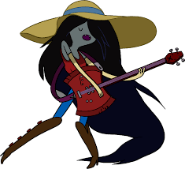
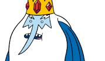

REI GELADO
O Rei Gelado (antigamente Simon Petrikov) é o antagonista principal (muitas vezes involuntariamente) de Hora de Aventura. Seu delito típico é o sequestro de uma princesa e forçá-la a casar-se com ele (talvez por causa da perda de sua noiva Betty, a quem ele chamava de "minha princesa" quando ainda era normal), até Finn e Jake interromperem(como sempre fazem). Como seu nome sugere, ele é o rei do reino gelado.
clique aqui

Marceline Abadeer, a Rainha dos Vampiros é uma das personagens principais de Hora de Aventura. Apesar de sua primeira aparição demonstrar uma natureza antagonista, com o passar da série a personagem se torna uma amiga próxima de Finn e Jake, e vai evoluindo sua personalidade e relacionamentos. Ao contrário dos vampiros convencionais, ela não precisa de sangue para viver, apenas se alimentando da cor vermelha. Ela também é uma grande cantora e compositora musical.
clique aqui para ficar gelado
- item 1
- item 2
- AAAAAAAAAAAAAA
| ID | NOME | |
|---|---|---|
| 1 | Gustavo | idade |